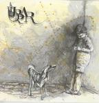

| Artist: | Uqbar |
| Title: | Uqbar |
| Label: | Viajero Inmovil UQBAR016VIR |
| Length(s): | 51 minutes |
| Year(s) of release: | 2004 |
| Month of review: | [12/2004] |
| 1) | Pytnisa | 6.18 |
| 2) | Cesare | 5.37 |
| 3) | Rojo De Espana | 8.08 |
| 4) | Fauno Con Trompetas | 7.24 |
| 5) | Arkangel | 6.07 |
bonus
| 6) | Seireme | 5.00 |
| 7) | Lucila Caesar | 6.43 |
| 8) | Tigre Mimbre | 5.49 |
The material was recorded between 1995 and 2001, the year of the band's demise. Whether or not it has been previously released doesn't become exactly clear. Let's just say that this posthumous release gives a full run down of the recorded work of this band. The first five tracks are from one session in 1995, the sixth from 2000 and the final two from 2001. Apparently those first five form something of an original album.
The pieces generally are quite grave and slow. Even though the sound is in some ways akin to Flairck, the lightness so present in Flairck's work is mostly absent from this one. Where initially the band use a variety of instruments, this slacks off to Fauno and Arkangel, which feature clarinet and guitar only. This combination in itself is not bad, but by making it the main one for longer periods of time leads to an abbrasive feeling and a degree of boredom. With this the Flairck likeness slacks off seriously, and the music becomes quite classical.
Seireme sees the return of the instruments, and with the introduction of a certain playfullness makes the Flairck likeness return with a vengeance.
The two closers return to the clarine-guitar line up, with aforementioned drawbacks.